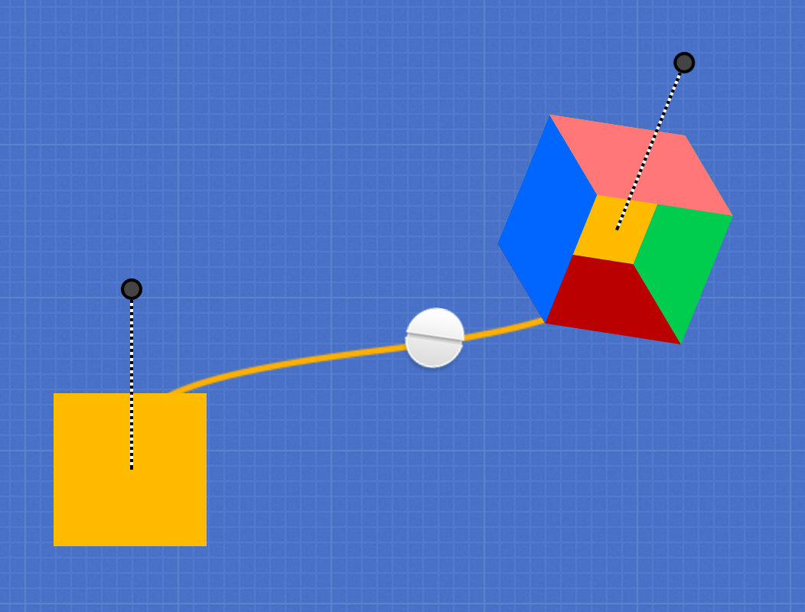

CSS animation made easy!
Stylie is a fun tool for easily creating CSS 3 animations. You can configure your animation graphically, tweak it, grab the generated CSS and go!
Watch this screencast for a quick tutorial.
The Stylie Workflow
When you first open the app, you will see a little ball moving from left to right. You probably don't want to animate an image of a ball, so click the "HTML" tab in the control panel on the right. This textarea contains the HTML that is being animated. You can put whatever you want in here, but let's stick some text in there for starters:
<h1>Hello there!</h1>
The preview updates automatically. Next, you'll want to change the beginning and ending positions of the animation. Just click and drag the crosshairs to your liking. When your cursor is not focused on a text input, you can hold the Shift key to make rotation handles appear on the crosshairs. Click and drag the handles to modify the starting and ending rotation positions.

If you want to tweak the crosshairs with more granularity, open the "Keyframes" tab and input specific values. "R" means "rotation."
Motion control
You can have fine-grained control over your animation. Click the "Tween" tab in the control panel to see the properties of the tween. For number fields such as "duration," you can type in the value or just press the up or down arrow keys to tweak it.
You can test out different easing formulae by selecting them from the dropdowns. You can control the easing formulae for each property of the animation. The preview updates automatically. You can also specify a custom easing formula if you don't like the provided ones. Simply input your formula into the "custom easing" fields. What you put into these fields must be valid JavaScript. Once you have inputted your custom formula, you can select "customEase1" or "customEase2" from the dropdowns.
Playback control
You'll notice a playhead in the bottom left of the screen. This is fully interactive; you can can play, pause and stop the animation. You can also click and drag the playhead and zip to any part of the timeline.
Generating your CSS
Once you've configured the animation to your liking, it is time to generate the CSS to be used in your web page. Click on the "CSS" tab in the control panel to see the ready-to-use CSS. You can configure the generated CSS for your specific needs, such as the name of the CSS class on the DOM element to be animated, and which browser vendors you want to support. More complex animations will generate very verbose CSS, so be aware of that.
Key bindings
Stylie has a few keyboard-activated features:
| (When no inputs are focused) |
| C |
Toggle the Control Pane |
| T |
Toggle the Timeline Scrubber |
| H |
Toggle this Help screen |
| Space bar |
Play/Pause the animation |
| Shift (hold) |
Show keyframe rotation handles |
This tool is open source
The code lives on Github. You are free to do what you please with the code - Stylie is distributed under an MIT license. If you would like to request a feature, please do so with the project's issue tracker.